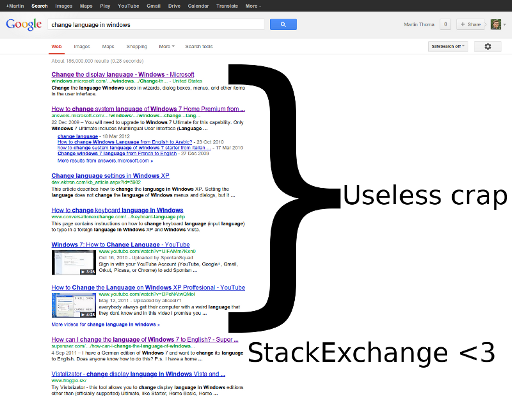
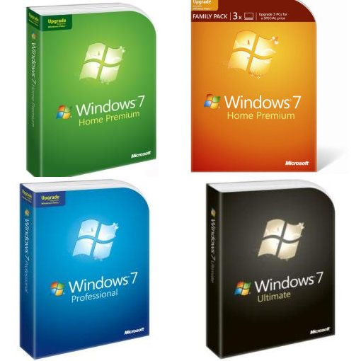
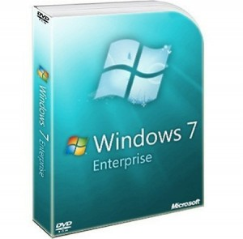
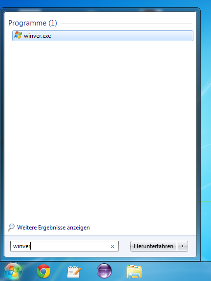
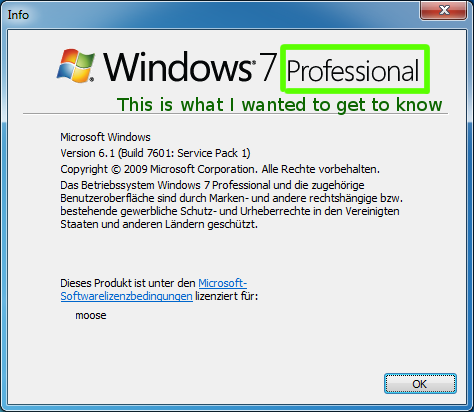
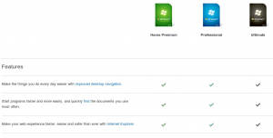

As a KIT student I may download pretty much of Microsofts software from a MSDNAA-shop for free. So I've downloaded Windows 7 and Visual Studio. I need them for work, so I thought it would be as simple as choosing to download it. But I didn't think of Microsofts will to make business at the expense of user experience.
Changing the language
The Linux way If you want to change the language on a Linux (GNOME) system, you have to go to System → Administration → Language support
You can choose from 140 languages for free, without any problems. However, most of them are only partially translated, but 28 are fully translated (source). 10 minutes to search through the menus, 1 minute to change the language.
Now the Windows way: I don't know where I can change the language in Windows 7, so lets search in the settings.
[10 minutes pass]
Well, lets google for the right way to achieve a simple language change:
{kind=link}

So, it seems as if I needed Windows 7 Ultimate or Windows 7 Enterprise edition. Which version do I have? Let's search ... hm, seeems as there are some versions:
{kind=link}

And also

{kind=link}
Find out which version I have (another 15 minutes of searching how to do so):
{kind=link}

And finally:
{kind=link}

Aaaaargh! I don't have the right edition to be able to change my language to English. I have to reinstall the whole system to get it in English!
Well, but as there are so many different editions, there have to be some differences. Lets see if I can find them. [5 minutes later] Oh, Microsoft offers some nice-looking information at windows.microsoft.com:
{kind=link}

What the #$@&%*!? Why do they write down similarities? I don't want to know what's the same, I want to know the difference! And even the similarities are meaningless. For example
Start programs faster and more easily, and quickly find the documents you use most often.
If you use comparisons as "faster" or "more easily" you have to say what you compare. Faster than Vista? Faster than DOS? Faster than Linux? All of those lines are meaningless marketing slang that does not offer any useful peace of information and only wastes time.
Result: I have wasted about one hour later, I know that I can't get my system in English without reinstalling it. I have to waste another hour to download it and even one more hour to reinstall it. Linux vs. Windows: 11 minutes of work, nothing to pay vs. 3 hours of work (I got it for free, as I am a student. Otherwise, I might have had to pay about $150).
Visual Studio
The team I am working with created a diagram on one developers machine. After he had to go, we wanted to continue on another developers machine. So we saved the version and opened it on the other machine. So far so good. After a while we noticed, that we were not able to edit the content of the diagram! The first developer had Visual Studio 2012 Ultimate, the second one "only" Visual Studio 2012 Professional. The difference is obvious, isn't it? NO, IT IS NOT!
Finally, a little story. Some weeks ago, a prof had some problems showing his slides that were made with Microsoft PowerPoint. The bulled points were showing, but not the text. A friend of mine said: "The source of this problem is obvious. He certainly does not have PowerPoint Ultimate" ☺
TL;DR
Microsoft creates a lot of different editions for their software. "Ultimate" seems to be always the best. Microsoft makes things too complicated, without any reason to do so. This video shows what I mean:
I don't understand why a company with that much money, great developers and a lot of user feedback is not able to produce satisfactory, working software.